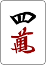
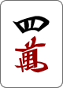
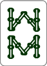
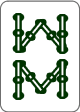
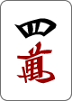
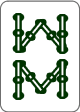
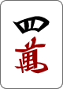
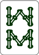

 



 



 : 0
: 0 : 0
裏ドラ : 0
: 0
: 0
裏ドラ : 0
: 0| 役 | 門前 | 副露 | 条件 | 例 |
|---|---|---|---|---|
| 立直 | 1飜 | - | 門前テンパイ時に宣言 | |
| 門前清自摸和 | 1飜 | - | 門前かつ自摸和了 | |
| 一発 | 1飜 | - | 立直宣言後、他家が副露しないかつ1巡以内に和了する | |
| 断么九 | 1飜 | 1飜 | 手牌に么九牌が含まれない | |
| 平和 | 1飜 | - | 和了形が4面子1雀頭かつ面子は全て順子 | |
| 一盃口 | 1飜 | - | 門前かつ同じ順子が2つ以上含まれる | |
| 嶺上開花 | 1飜 | 1飜 | 嶺上牌で自摸和了 | |
| 海底摸月 | 1飜 | 1飜 | 海底牌で自摸和了 | |
| 河底撈魚 | 1飜 | 1飜 | 海底牌で栄和了 | |
| 搶槓 | 1飜 | 1飜 | 他家の暗槓を除く槓宣言牌が和了牌 | |
| 混全帯么九 | 1飜 | 1飜 | 全ブロックに字牌を含む么九牌が含まれる | |
| 七対子 | 2飜 | - | 対子7組 | |
| 一気通貫 | 2飜 | 1飜 | 123/456/789か234/567/891か345/678/912の面子を1色で含む | |
| 三色同順 | 2飜 | 1飜 | 萬子/筒子/索子で同じ順子を含む | |
| 純正全帯么九 | 2飜 | 1飜 | 全ブロックに老頭牌が含まれ、字牌が含まれない | |
| 混一色 | 2飜 | 1飜 | 字牌と数牌1色 | |
| 三色同刻 | 2飜 | 1飜 | 萬子/筒子/索子で同じ刻子を含む | |
| 三暗刻 | 2飜 | 1飜 | 暗刻が3つ含まれる | |
| 二盃口 | 2飜 | 1飜 | 一盃口を2つ含む | |
| 清一色 | 2飜 | 1飜 | 数牌1色のみ | |
| 三槓子 | 役萬 | 役萬 | 槓子を3つ含む | |
| 国士無双 | 役萬 | - | 老頭牌+字牌から13種14牌 | |
| 四暗刻 | 役萬 | - | 面子が全て暗刻 | |
| 緑一色 | W役萬 | 役萬 | s23468z6以外を手牌に含まない | |
| 小四喜 | 役萬 | 役萬 | 風牌の3種を刻子として、残りの風牌を雀頭として含む | |
| 四暗刻単騎待ち | W役萬 | - | 四暗刻かつ単騎待ちで和了 | |
| 国士無双13面待ち | W役萬 | - | テンパイ形が国士無双かつ雀頭が無い状態 | |
| 大四喜 | W役萬 | W役萬 | 風牌全てを刻子として含む | |
| 四槓子 | W役萬 | W役萬 | 面子が全て槓子 | |
| 人和 | - | - | 自身が子供のとき、第一自摸までに栄和 | |
| 天和 | 役萬 | - | 自身が親のとき、配牌時点で和了 | |
| 地和 | 役萬 | - | 自身が子供のとき、第一自摸で自摸和 |